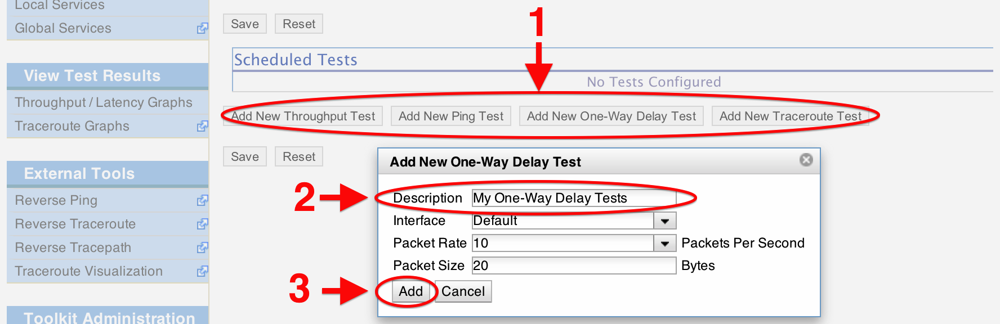

Download the NetInstall ISO for i386 or x86_64 depending on your system’s architecture.
See also
The NetInstall is the recommended installation type, but for more information on other installation types see Getting the Software.
Using your favorite software, burn the image to a CD, DVD or USB drive and insert the chosen installation media into your host.
Note
Linux and Macintosh users may consider using the dd tool: sudo dd if=/PATH/TO/FILE.iso of=/dev/DISK
Follow the prompts provided by the CentOS installer to install the required packages. If you have installed a Linux operating system before, these prompts should be relatively self-explanatory.
See also
For a complete walkthrough of these prompts see CentOS NetInstall Guide
Once the installation completes and the host reboots, login from the console using the root password you created during the previous step

Open http://<hostname> in a web browser where <hostname> is the name or address of your host
Click on Administrative Info in the left menu and login as the user created in the previous step
On the page that loads, click the Edit button (1) and enter the requested information in the provided fields. Click OK (2) and then Save (3) when you are done.

See also
For more information on updating administrative information see Updating Administrative Information
You are now ready to add some regular tests. Click on Configure Tests in the left menu.
On the page that loads use the buttons to select the types of tests you want to add (1). You will initially be prompted for test parameters. Enter a human-readable description of the tests and change any parameters you desire (2). In general the defaults will be fine for most cases. Click Add when done (3).

You now need to select other hosts to test against. You may do so by explicitly adding a host or selecting a community and browsing the list (1). When you are done adding tests, hit Save (2).

See also
For more information on adding regular tests see Configuring Regular Tests
After some time you may view the results of your tests by clicking on Throughput/Latency Graphs or Traceroute Graphs in the left menu (depending on the test type).

Warning
It will take time for data to be collected and display on the graphs. For throughput data this may be serveral hours depending on the test interval. For all other test types, you should see data within 30 minutes.
See also
For more information on using the graphs Regular Testing Graphs